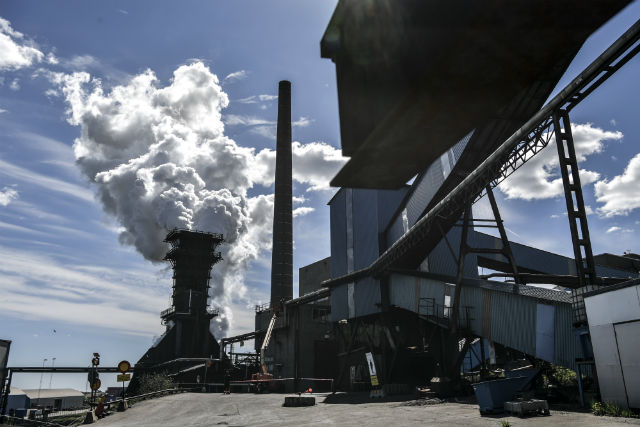
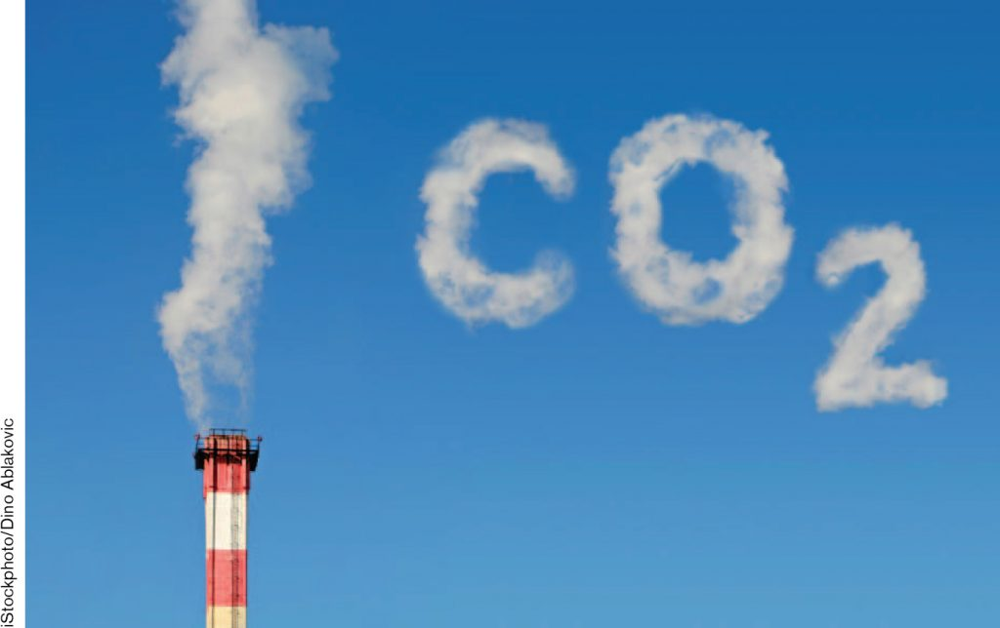
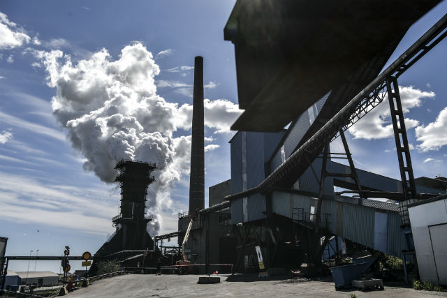
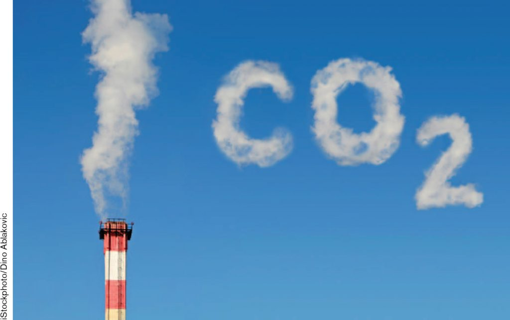
 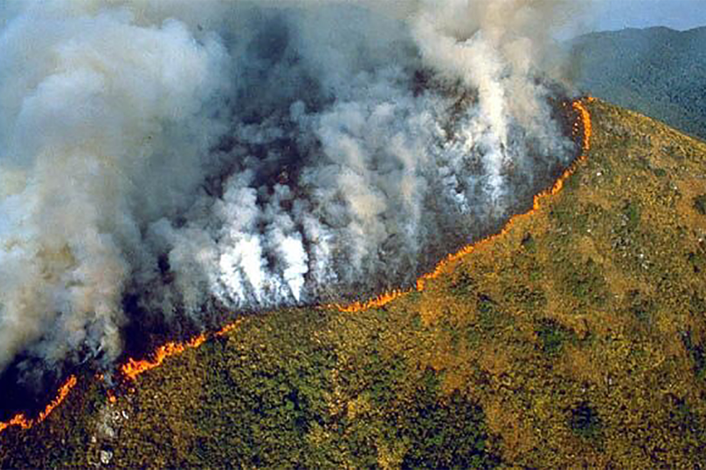
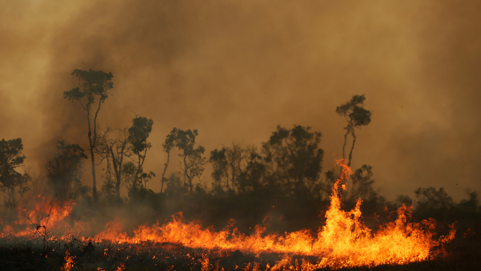
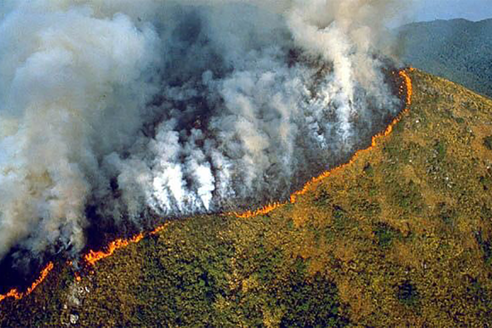
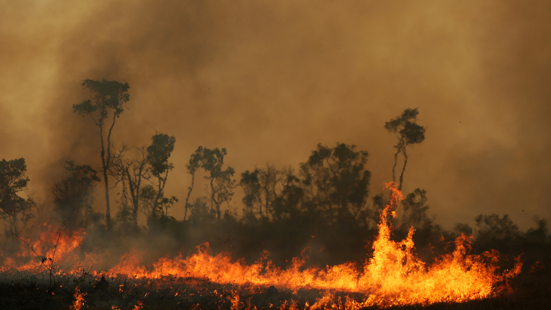
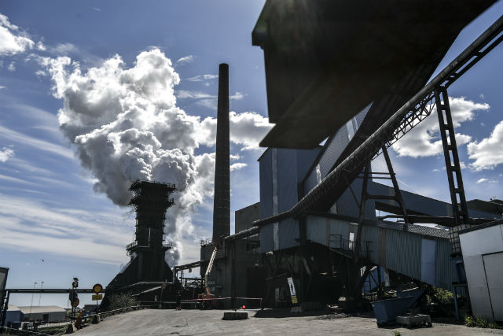
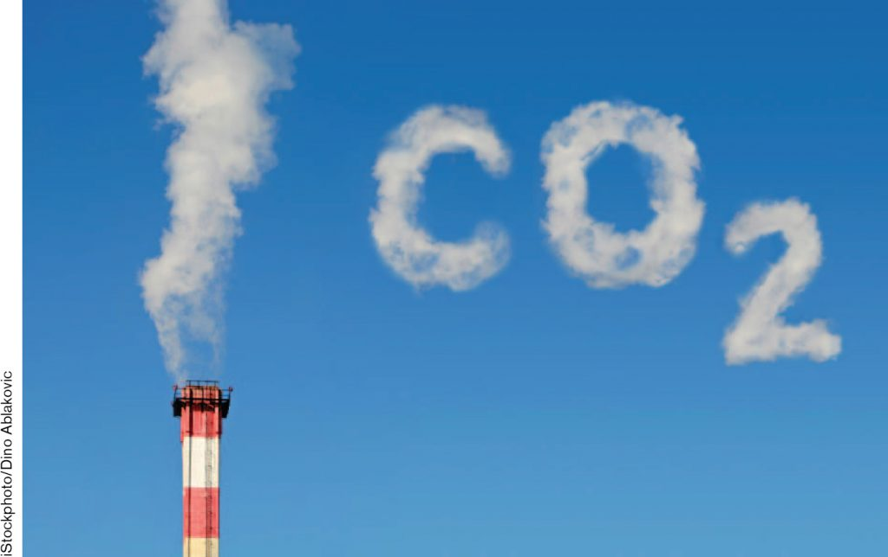
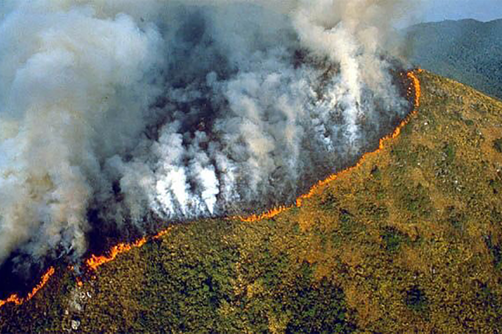
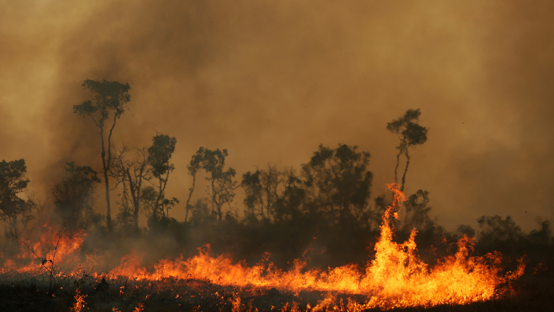
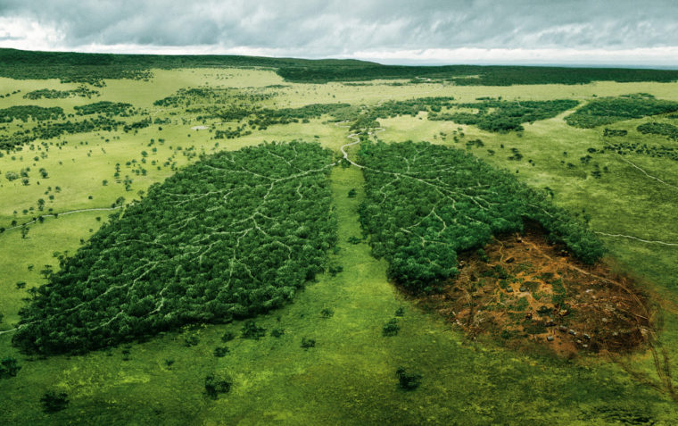
| Nepstad has been studying the amazon rain forest for over 30 eyars | NEPSTAD:....You know, really, every time a little droplet of water leaves a leaf and goes into vapor, it's absorbing energy and it's cooling things down. And the Amazon is so big that if we lose it, it's going to change the way air and energy move around the planet, and that means our climate will change. For me, that's something that really ties us to the health of the Amazon wherever we are on the planet. |
|---|
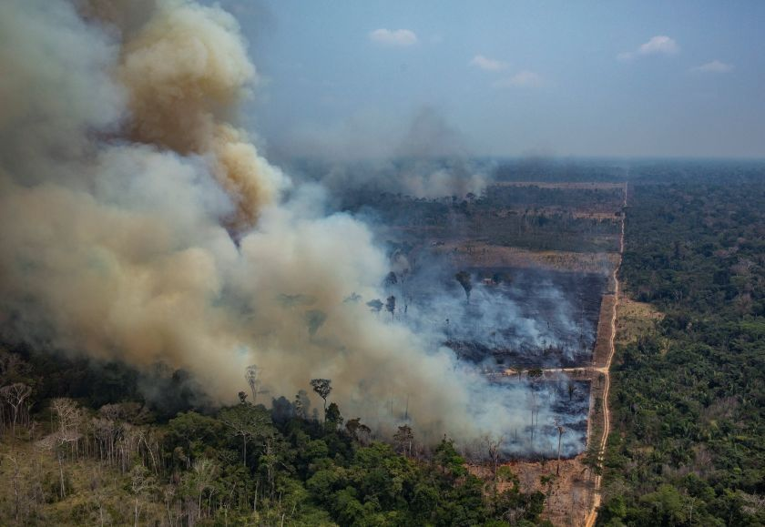
| Across the burning Amazon | , smoke is rising and fine particles of charcoal are falling softly to the ground. At last count, more than 93,000 fires were alight in the Brazilian Amazon, up more than 60 percent from the same time last year, and the highest number since 2010. According to NASA, this year’s fires are more intensethan in previous years, too. But Brazil’s National Institute of Space Research (INPE) has only been keeping fire records since 1998, and two decades isn’t long in the life of a forest where trees live for centuries and humans have been setting fires for millennia. |
|---|

| In terms of climate change | Cutting trees both adds carbon dioxide to the air and removes the ability to absorb existing carbon dioxide. If tropical deforestation were a country, according to the World Resources Institute, it would rank third in carbon dioxide-equivalent emissions, behind China and the U.S. The numbers are grim, but many conservationists see reasons for hope. A movement is under way to preserve existing forest ecosystems and restore lost tree cover. |
|---|